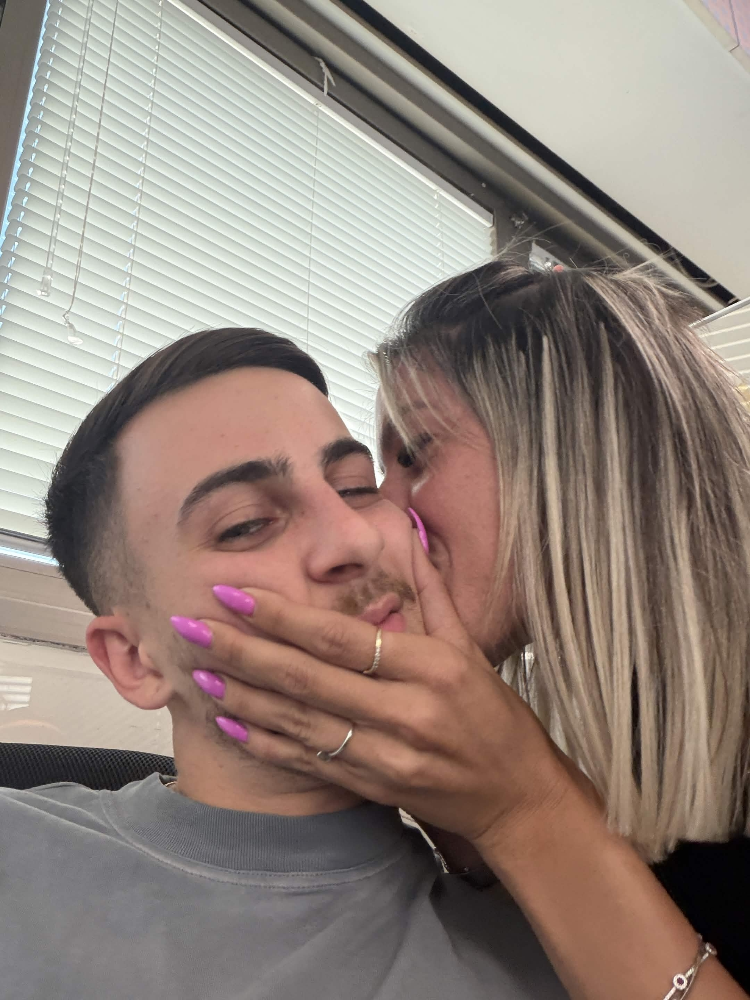
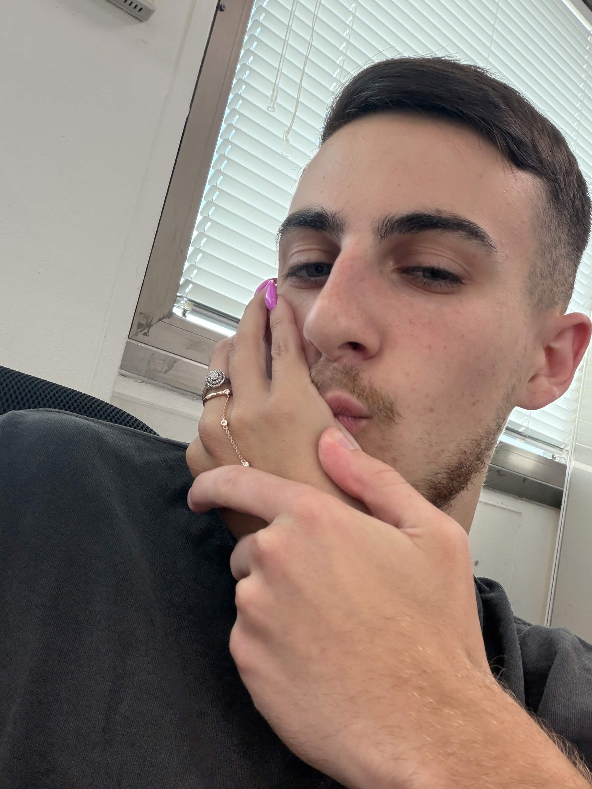

👑
מזל טוב למלכה שלי
נוני שלי ❤️
💌
הכניס סיסמה
יש אנשים שפוגשים בחיים במקרה, ויש אנשים שמרגיש כאילו החיים ממש דאגו להפגיש ביניהם.
כשאני חושב על איך הכול התחיל, זה עדיין מצחיק אותי. הרי בכלל לא הייתי אמור להגיע לצוות שלך, ובסוף דווקא שם הכרתי אותך. לפעמים אני חושב שאם הייתי מגיע למקום אחר, אולי לא הייתי פוגש את האישה הכי מיוחדת שנכנסה לי לחיים.
מהרגע הראשון היה משהו אחר. בלי להתאמץ, בלי לתכנן, פשוט נוצר חיבור שקשה להסביר (אחרי שלושה ימים 😂). עם הזמן הפכת להרבה מעבר לחברה מהעבודה. הפכת להיות הבן אדם היחיד שאני מרגיש שאני יכול לספר לו הכול, הבן אדם שמכיר אותי באמת, עם כל הצדדים שלי. את יודעת דברים עליי שאף אחד אחר לא יודע, ותמיד ידעת לקבל אותי בדיוק כמו שאני.
אני אומר לך את זה כבר אלף פעם, אבל אני אגיד את זה שוב... אני באמת לא חושב שאני אמצא בחיים בחורה כמוך. יש בך משהו נדיר. איך שאת דואגת, הצחוק שלך, הלב שלך, החיוך הכובש שלך ואיך שאת מצליחה להפוך אפילו יום רגיל למשהו הרבה יותר טוב.
האמת? אני מרגיש שזכיתי. ולא סתם זכיתי... זכיתי בלוטו. כי מכל האנשים בעולם, יצא לי לפגוש דווקא אותך. זכיתי באדם שהוא לא רק חברה טובה, אלא מישהי שהפכה לחלק כל כך משמעותי מהחיים שלי.
יש לנו כל כך הרבה רגעים קטנים שאף אחד בעולם לא יבין חוץ מאיתנו. כמו הרגעים שאנחנו יושבים לאכול ביחד, ואני תמיד דואג לשים את המראה בצורה שאני יכול לראות אותך בזמן שאני אוכל 😂. אולי זה נראה לאחרים כמו משהו קטן ומצחיק, אבל בשבילי אלה בדיוק הדברים שעושים את הרגעים איתך למיוחדים.
וכמובן שאי אפשר לשכוח את ה"חיחיחי" שלך 😂. הצחוק המזויף הזה שאת עושה לפעמים, עם הפרצוף שרק את יודעת לעשות, שגורם לי כמעט לא לשלוט על עצמי ורק את תביני למה 😂.
יש לנו גם את הרגעים שלנו שאף אחד לא יודע עליהם. המבט הזה שאנחנו נותנים אחד לשנייה, ואז סוגרים עיניים חזק כאילו נתנו נשיקה. זה אולי הדבר הכי מצחיק בעולם, אבל גם הכי שלנו. זה הסוד הקטן שלנו, הדבר הזה שרק אנחנו מבינים, ואני לא רואה את עצמי אומר לך ביי ביום־יום בלי לעשות לך את זה.
אני רוצה שתדעי שגם עכשיו, כשאת רחוקה בחו"ל, אני מרגיש כמה את חסרה לי. פתאום משהו ביום מרגיש אחרת. חסרים הצחוקים, השיחות, הרגעים הקטנים... והתחושה הזאת שכשאת לידי הכול פתאום מסתדר. כשאני איתך אני תמיד מרגיש כאילו כל הרעש מסביב נעלם, כאילו לרגע אין אף אחד בעולם חוץ מאיתנו. וזה משהו שאני מעריך יותר ממה שאת כנראה מבינה.
ואני לא אשכח את השיחה שלנו על זה שאם החיים היו נראים קצת אחרת, אולי הדברים היו מקבלים כיוון אחר. אבל גם בתוך המציאות שלנו, אני רוצה שתדעי כמה את חשובה לי וכמה מקום יש לך בלב שלי.
וכמובן... אני עדיין זוכר את ההסכם שלנו... שבגלגול הבא את מחכה לי ואנחנו מתחתנים. ❤️ את פשוט זכייה , ואני מרגיש שזכיתי בכל העולם שהכרתי אותך
ביום ההולדת שלך אני רק רוצה להגיד תודה. תודה על כל פעם שהיית שם בשבילי. על כל שיחה. כל צחוק. כל עצה. וכל רגע קטן שהפך לגדול. תודה על מי שאת, ועל זה שהפכת להיות אחת המתנות הכי גדולות שקיבלתי בחיים.
אני מאחל לך שתמיד תהיי מאושרת, שתמשיכי לחייך את החיוך שלך, שתצליחי בכל מה שתעשי, שתהיי מוקפת באנשים שאוהבים אותך (ולא בנים, רק בנות 😂), ושכל הטוב שאת נותנת לאחרים יחזור אלייך פי כמה.
תזכרי שאת באמת אחת ויחידה. יש אנשים שפוגשים פעם בחיים... ואת בדיוק אחת מהם.
אה... ודבר אחרון. המשמעות של המתנה שקניתי היא שלא משנה מה השעה, איזה יום או כמה זמן יעבור... אני תמיד אהיה פה בשבילך. בכל מצב בחיים. לטוב ולרע. אני אהפוך את כל העולם אם צריך, רק כדי שתהיי מאושרת.

